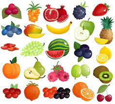

| Tipo de alimento | Ejemplos | imagen |
|---|---|---|
| Frutas | Fresa,manzana,pera,sandia. |  |
| Verduras | Jitomate,papa,cebolla,zanahoria. |  |
| Cereales | Arroz,maiz,trigo,cebolla,zanahoria. | |
| Leguminosas | Alfalfa,chicharo,garbanzo,habas,ejote. | |
| Origen animal | Carnes,huevos,pescados,mariscos. | |
| Leche y sus derivados | Leche,crema,yogurt,mantequila. |
Una alimentación saludable nos ayuda a tener un buen estado de salud, a sanar o realizar procesos de recuperación, acombatir enfermedades e infecciones y a evitar enfermedades crónicas degenerativas causadas por la obesidad.
Si bien, todos tenemos necesidades diferentes de nutrición, lo que es igual para todos es tener hábitos de alimentación quefavorezcan nuestra salud y la de toda nuestra familia.
La preparación de los alimentos debe ser higiénica, es mucho mejorpreparar los alimentos en casa y si es posible comer en compañía de la familia o amigos para poder disfrutar ese momento.La dieta debe de ser variada y suficiente.
Respecto a esto, en los siguientes blogs te mostraremos cuáles son las porcionesadecuadas para comer lo que tu cuerpo necesita.Debemos aprovechar también los alimentos regionales en donde vivimos y los de cada estación ya que eso también nosayudará a tener una alimentación variada y económica.
Otra cosa importante es incluir en las comidas principales (desayuno, comida, cena) todos los grupos de alimentos,consumiendo más verduras, debido a que nos dan satisfacción y contienen fibra, agua, vitaminas y elementos inorgánicos(minerales).